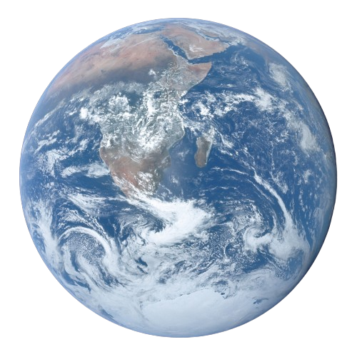

Mercury
.4 AU or 35 million miles
Venus
.7 AU or 67 million miles

Earth
1 AU or 93 million miles

Mars
1.5 AU or 142 million miles
Asteroid Belt (Yes, this is acually here)
2 to 4 AU or 186 to 372 million miles
This also marks the end of the 4 terrestrial planets (inner planets). Up next are the Gas Planets (outer planets).
Jupiter
5.2 AU or 484 million miles

Saturn
9.5 AU or 887 million miles
Uranus
19 AU or 1.8 billion miles
Neptune
30 AU or 2.8 billion miles
Kuiper belt
50 AU or 4.7 billion miles
The edge of the solar system, the Kuiper Belt. This is where the dwarf planet Pluto, and many other Dwarfs call home. This is a new part of our Solar System that we have begun to discover.
Click on the NASA logo to learn about man made creations going beyond the Solar System